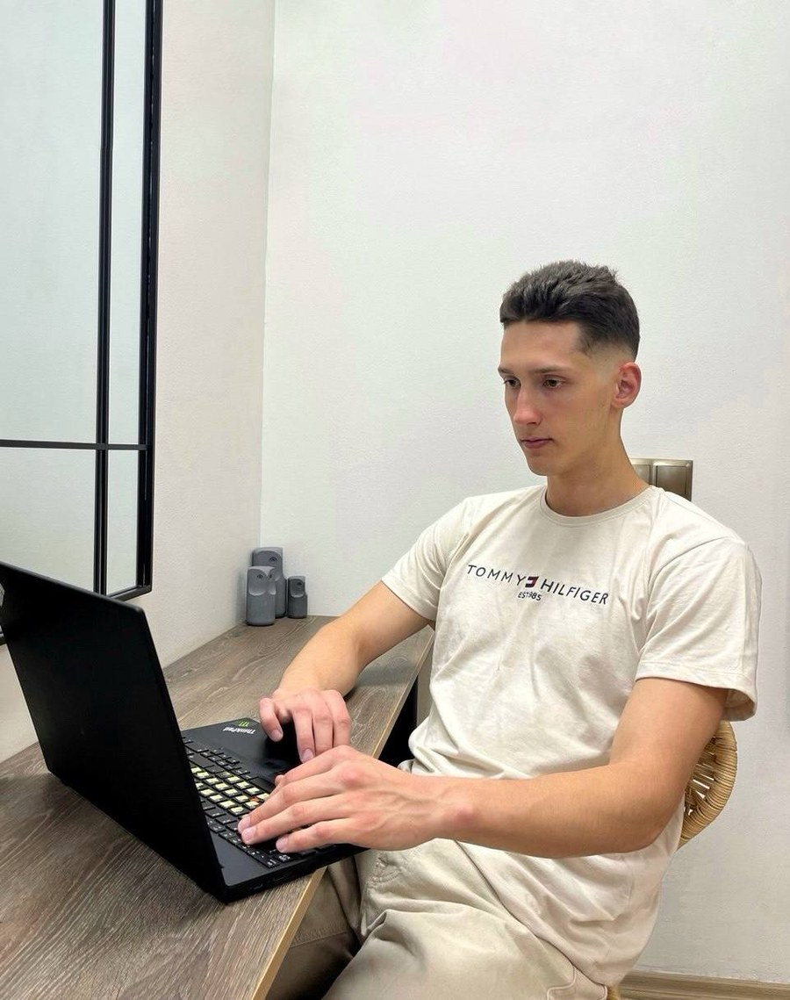

Tydelighet
Besøkende skal raskt forstå hvem du hjelper og hva du tilbyr.
Om webproduksjon.no

Hei, jeg heter Renat. Jeg bygger profesjonelle, enkle nettsider for små bedrifter som trenger en tydelig start på nett.
Jeg har bodd i Bergen siden 2015 og samarbeider nå digitalt med kunder over hele Norge. Møter kan gjennomføres på Google Meet, og prosjektet organiseres slik at du vet hva som skjer fra første samtale til ferdig levering.
Jeg tror ikke alle bedrifter trenger et stort system. Ofte er det viktigere at nettsiden forklarer tjenestene godt, ser seriøs ut på mobil og gjør det enkelt å ta kontakt.
Digitalt samarbeid
Jeg kan samle innhold, avklare struktur og gå gjennom løsningen digitalt. Du beholder oversikten over hva som skal publiseres, og får filene dine ved levering.

Besøkende skal raskt forstå hvem du hjelper og hva du tilbyr.
Nettsiden skal være mulig å holde riktig og oppdatert.
Jeg lover ikke rangeringer, trafikk eller kunder som jeg ikke kan kontrollere.
Statisk HTML gjør løsningen lett å flytte og uten krav om WordPress.
webproduksjon.no er merkevaren jeg bruker for dette tilbudet. Virksomheten drives under Bogdanovs Laserart, et enkeltpersonforetak registrert i Enhetsregisteret med organisasjonsnummer 932 091 992 og forretningsadresse i Loddefjord, Bergen.
Dette passer for deg som vil ha en profesjonell nettside uten nettbutikk, innlogging, avansert booking eller et stort redaktørsystem. Hvis du trenger slike funksjoner, sier jeg heller fra tidlig enn å levere en løsning som ikke passer.